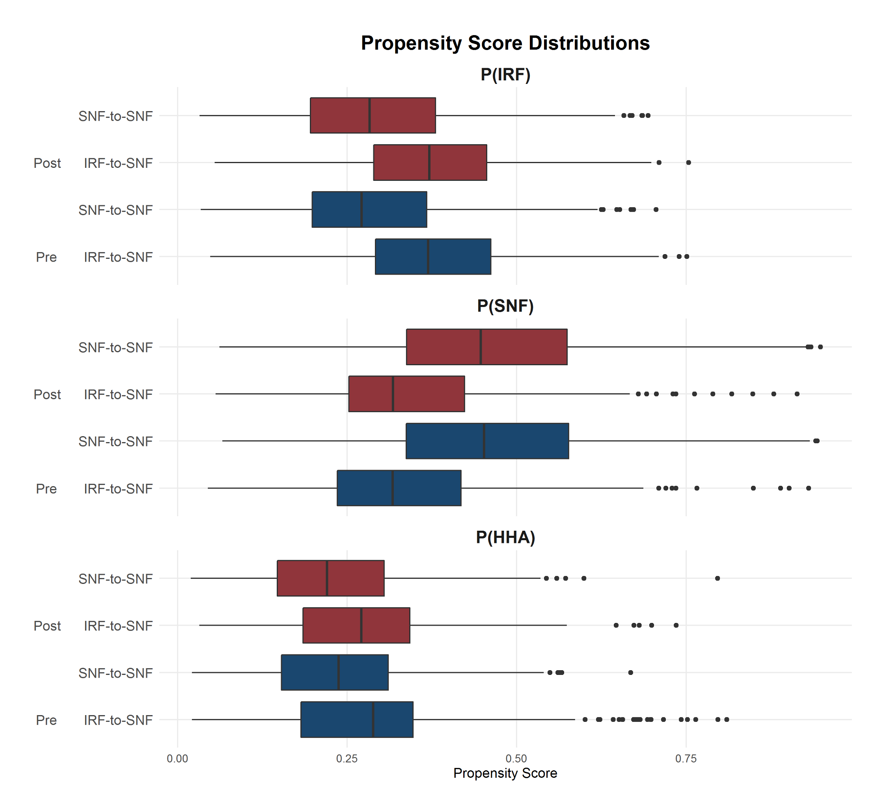
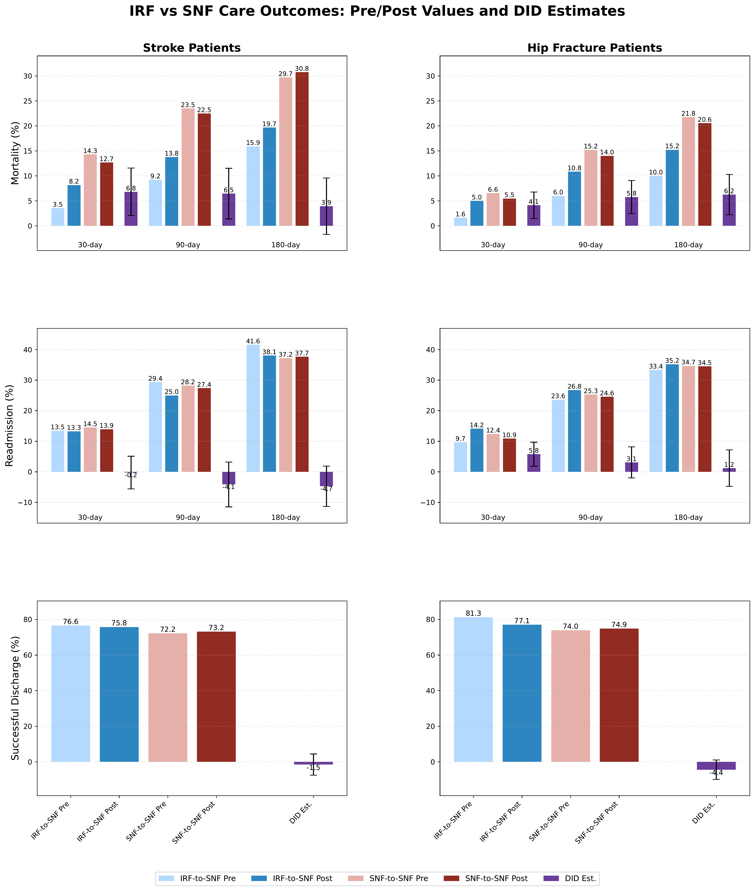
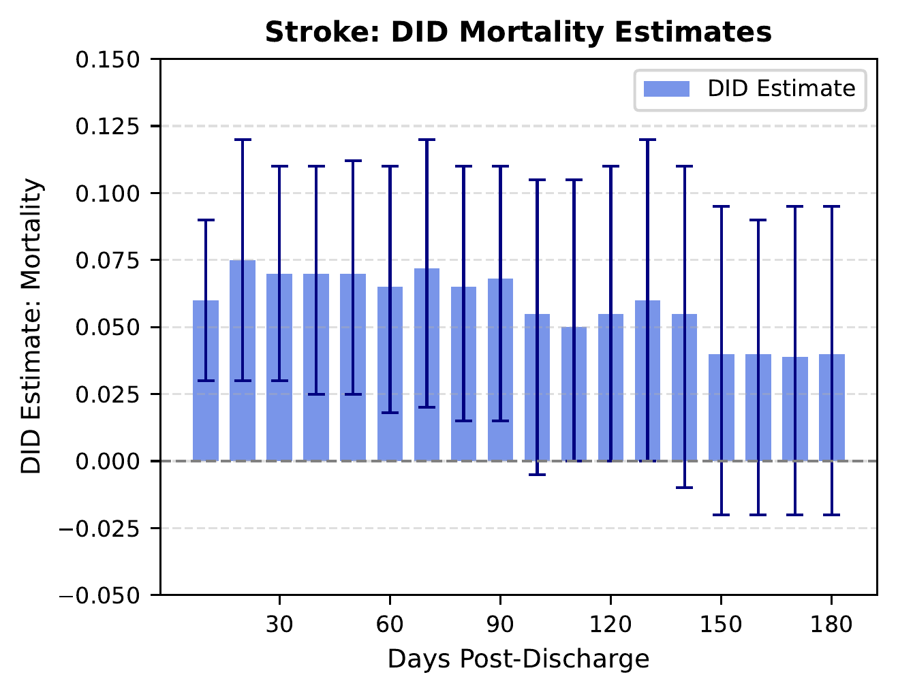
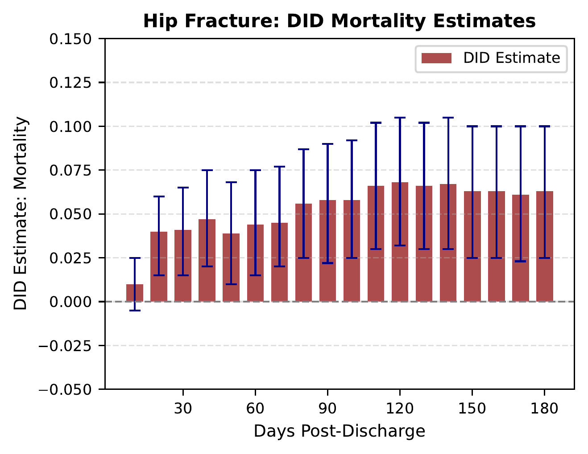
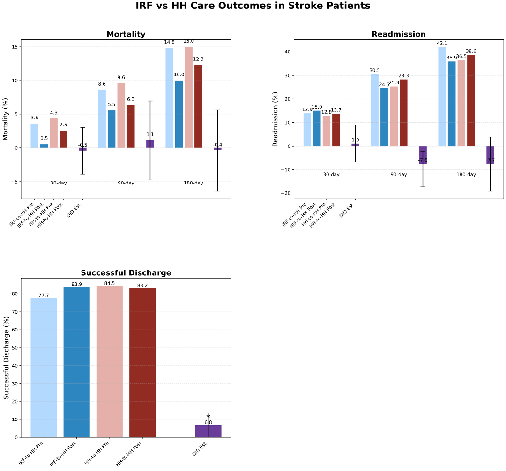

Overview
Following hospitalization for stroke or hip fracture, discharge to an Inpatient Rehabilitation Facility (IRF) was associated with significantly lower 90-day mortality compared to a Skilled Nursing Facility (SNF).
This survival benefit was observed despite no significant difference in readmissions for stroke patients and a higher readmission rate for hip fracture patients redirected to SNF.
Prior research comparing outcomes between Inpatient Rehabilitation Facilities (IRFs) and Skilled Nursing Facilities (SNFs) has suggested IRFs lead to better outcomes, though at a greater cost. However, these estimates face a significant challenge: confounding by indication. Patients are not randomly assigned to post-acute care (PAC) settings. IRFs, for example, select patients based on medical acuity and the ability to tolerate intensive therapy.
This study uses a robust quasi-experimental design, leveraging hospital-based IRF unit closures as a natural experiment, to provide a more precise estimate of the comparative effectiveness of IRF versus SNF care.
Why This Paper Matters
- While redirecting patients from IRF to SNF care did not consistently reduce hospital readmissions, it was associated with a significant increase in mortality.
- This finding underscores that IRF access has a critical impact on patient survival, a factor that must be carefully weighed in post-acute care referral and payment policies.
The Research Question
Why can't we just compare outcomes directly? The core challenge is selection bias. Patients discharged to IRFs are clinically different from those discharged to SNFs. IRFs are subject to Medicare's "60% Rule," which concentrates patients with specific conditions, and they preferentially admit patients who can tolerate at least three hours of daily therapy.
This non-random selection means that simple comparisons are hopelessly confounded. Patients who go to IRFs may be generally younger and have a lower comorbidity burden than those discharged to SNFs.
Previous studies have tried to solve this using "distance to facility" as an instrumental variable (IV). However, this instrument is imperfect. Patient and provider locations are often correlated with socioeconomic factors that independently influence health outcomes, weakening the validity of the approach. We needed a stronger, more random "shock" to the system to isolate the true causal effect of the care setting.
Study Framework (The 'Complier' Approach)
Our solution was to use a natural experiment created by the closure of hospital-based IRF units. These closures, primarily driven by hospital-level financial considerations rather than patient characteristics, act as a strong instrumental variable.
This design allows us to use a cross-temporal matching approach to identify three "latent" groups of patients, similar to those in an IV framework:
- Compliers: This is our group of interest. They are the patients who were discharged to the hospital's IRF unit before it closed, but were redirected to an alternate setting (like an SNF or Home Health) after it closed.
- Always Takers: These patients continued to use IRF care even after the closure, likely by traveling to a free-standing IRF.
- Never Takers: These patients were discharged to an SNF or Home Health both before and after the IRF closure. They would not have used the IRF even when it was open.
By identifying these groups, we can perform a Difference-in-Differences (DiD) analysis. We compare the change in outcomes (pre-closure vs. post-closure) for the Compliers against the change in outcomes for the matched Never Takers (who serve as our control group). This method isolates the true effect of substituting SNF or Home Health care for IRF care.
Methodological Check: Propensity Score Overlap
A key assumption for this matching to work is "positivity," meaning there is sufficient overlap in the characteristics of patients across different groups and time periods. The figure below shows the distributions of the propensity scores (the probability of discharge to IRF, SNF, or HH) for the different groups, demonstrating substantial overlap and validating the matching procedure.
This plot depicts the distribution of propensity scores used in our matching approach for the IRF vs SNF comparison among stroke patients.
Methods & Data
Data Sources
We used 100% Traditional Medicare data from 2007-2019, including:
- Medicare Beneficiary Summary File (MBSF) for demographics, enrollment, and mortality.
- MedPAR and Inpatient SAF files for index hospitalizations.
- IRF-PAI and Provider of Service (POS) files to identify IRF unit closures.
- Chronic Conditions Warehouse (CCW) for chronic conditions.
- Residential History File (RHF) for pre-hospital residence.
Study Population
- We identified 55 hospitals that closed their IRF units between 2009 and 2017.
- These hospitals had stable stroke/hip fracture volume but at least a 25% (relative) reduction in IRF discharges post-closure.
- The final sample included 10,761 stroke and 13,963 hip fracture hospitalizations.
Analytical Model
- We used a cross-temporal matching design to identify Compliers, Always Takers, and Never Takers.
- Multinomial propensity scores for discharge to IRF, SNF, or HH were estimated using the XGBoost algorithm.
- Models controlled for 224 total covariates, including demographics, chronic conditions (CCW, Elixhauser), and index hospitalization details (ICD codes, LOS, ICU/CCU use).
- A vector-matching approach was used to match patients within hospital clusters.
- The final treatment effect was estimated using a Difference-in-Differences (DiD) model.
Key Findings
What happens when patients who would have gone to an IRF are redirected to other settings?
IRF vs. SNF (Stroke & Hip Fracture)
Finding 1: Significantly Increased Mortality
Patients redirected from IRF to SNF experienced a substantial increase in mortality.
- Stroke Patients: +6.5 percentage point increase in 90-day mortality.
- Hip Fracture Patients: +5.8 percentage point increase in 90-day mortality.
This effect was largest in the first 20 days post-discharge, aligning with the typical IRF length of stay, and remained stable through 90 days. We also found that specific conditions, such as hemorrhagic stroke, white blood cell diseases, and liver disease, were associated with this increased mortality risk (see Supplemental Table S4).
Finding 2: No Readmission Benefit
The higher mortality in SNFs was not offset by a reduction in hospital readmissions.
- Stroke Patients: No significant difference in readmission rates at any time point.
- Hip Fracture Patients: A significant increase in 30-day readmissions (+5.8 percentage points).
Finding 3: No Change in Community Discharge
We found no statistically significant differences in the rate of successful community discharge for either stroke or hip fracture patients redirected to an SNF.
DID = Difference in differences, unadjusted mean values and DID point estimates (bars) and 95% confidence interval (black lines).
DID = Difference in differences, point estimates (circle dots) and 95% confidence intervals (dotted lines) every ten-day increment up to 180 days following hospital discharge.
DID = Difference in differences, point estimates (circle dots) and 95% confidence intervals (dotted lines) every ten-day increment up to 180 days following hospital discharge.
IRF vs. Home Health (Stroke)
Finding 1: No Change in Mortality or Readmissions
For stroke patients, redirection from IRF to home with home health (HH) was not associated with any significant change in mortality or readmission rates.
Finding 2: Improved Rate of Successful Community Discharge
Stroke patients who received HH instead of IRF had a significantly higher likelihood of a successful community discharge.
- Stroke Patients: +6.8 percentage point increase in successful community discharge.
This suggests that for some stroke patients, avoiding an institutional stay by discharging directly home with HH may lead to a more stable return to the community.
Implications & Limitations
Implications
- For Policymakers: Financial incentives from Medicare Advantage or value-based programs that strongly discourage IRF utilization must be balanced with clinical needs. Our findings suggest that restricting IRF access for these patients could lead to a tangible increase in patient mortality.
- For Clinicians & Health Systems: IRF care appears to provide a clear survival advantage over SNFs for high-risk stroke and hip fracture patients. This is likely due to greater rehabilitation intensity, better continuity of care, and faster access to specialists in the hospital-based IRF setting.
Limitations
- Unmeasured Confounding: Despite our robust design, we cannot rule out residual confounding from factors not fully captured in administrative data. This includes patient-level rehabilitation tolerance (a key IRF admission criterion), cognitive function, frailty, or social support.
- Outcomes: We could not evaluate functional or cognitive improvement due to differences in assessment tools across PAC settings (e.g., IRF-PAI vs. MDS).
- Generalizability: Our results, based on hospital-based IRF closures, may not be fully generalizable to free-standing IRFs, which may serve a different case mix.
The Full Paper
This research was published in the Journal of the American Geriatrics Society.
Full Citation: Lake D, Kumar S, Geng F, Gozalo P. Comparative Effectiveness of Inpatient Rehabilitation Versus Skilled Nursing Facilities for Stroke and Hip Fracture Patients. Journal of the American Geriatrics Society. 2025.